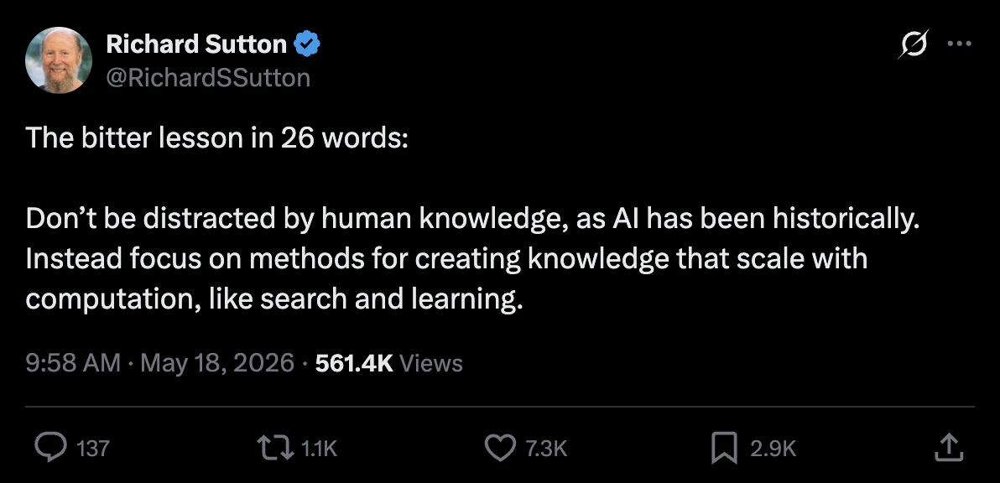
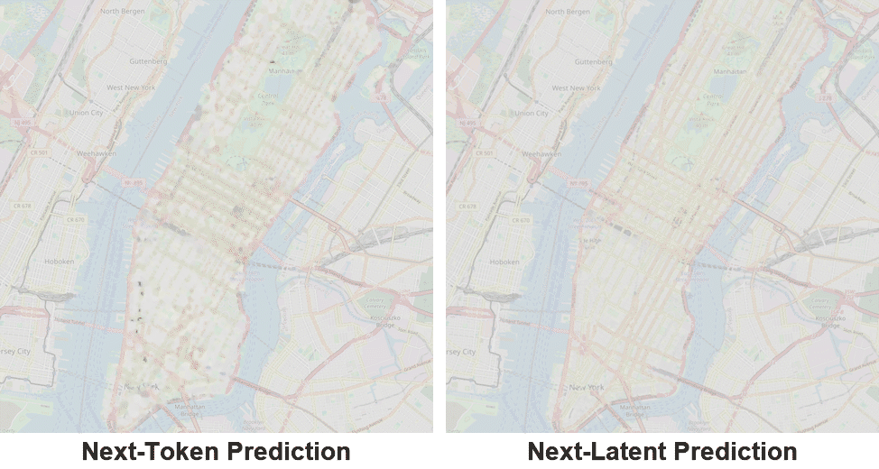
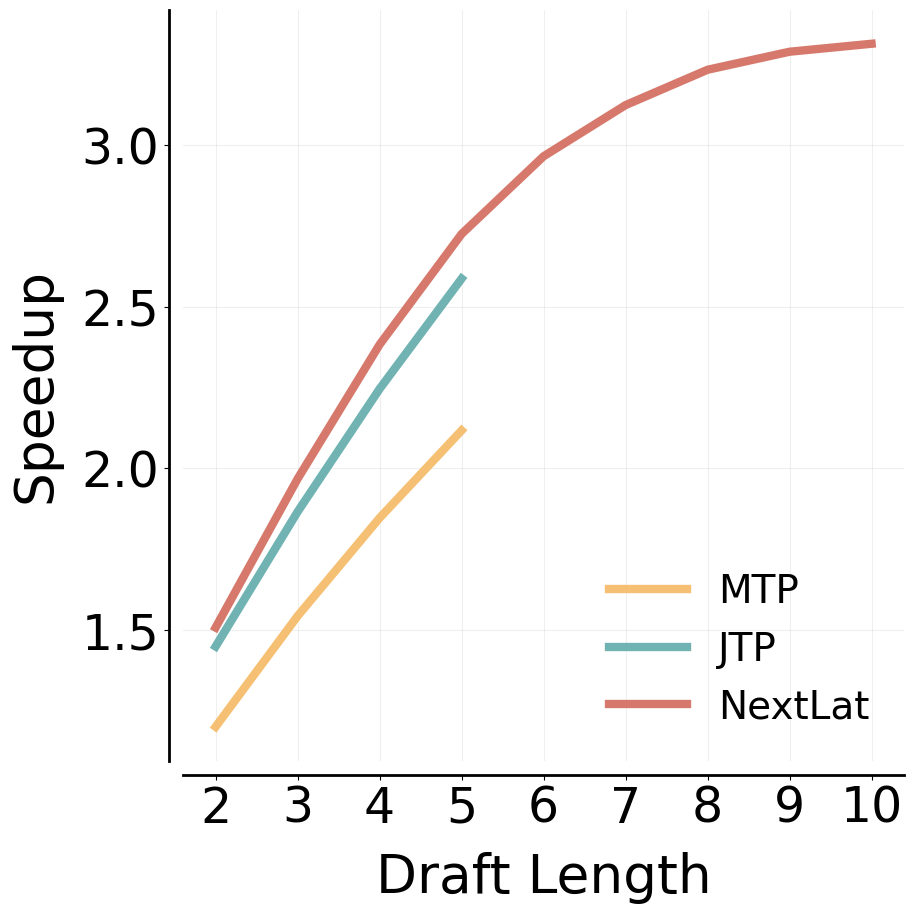
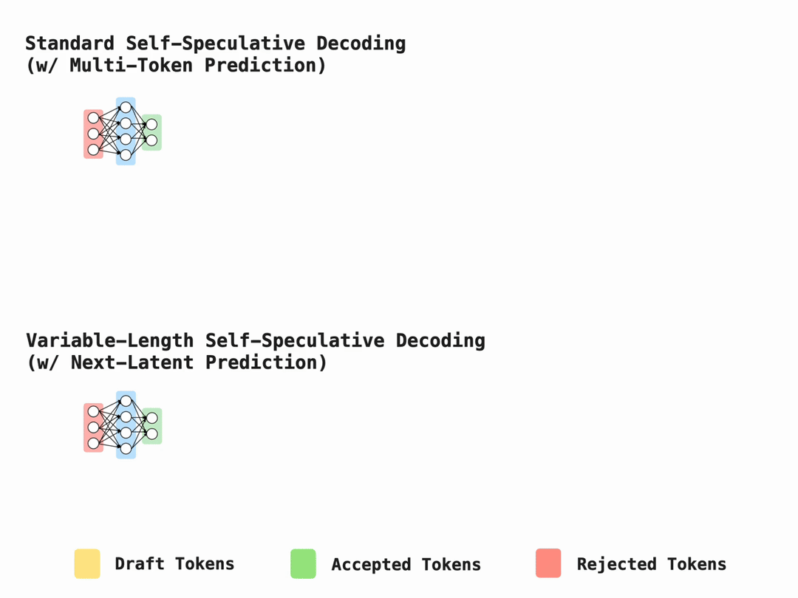

今天的主流大模型,训练目标就是一句大白话:预测下一个token。这篇来自微软研究院的论文博客问了一个更基本的问题：如果模型除了预测下一个token,还学会预测自己的下一步思考状态(下一个隐状态),会怎样?
这篇解读是Next-Latent Prediction Transformers一文的作者介绍页(jaydenteoh.github.io 2026-05-25发布,arXiv 2511.05963)。下面这张动图就是全文想传达的那帧:左侧是token级预测,右侧是新增的隐空间(向量空间)内的自预测。
传统做法只训练模型预测下一个token:给定过去的token序列,输出概率最大的那个token。
NextLat加的第二条约束是:让模型同时学会预测自己在下一时刻的隐藏状态：也就是不只看字面下一个词是什么,而是预先想清楚'读进下一个token之后,我的内部表示会变成什么样'。
作者开篇直言要质疑当下序列建模的两个主导组件:其一是Transformer架构本身;其二是next-token预测。随后他会展示Next-Latent Prediction(NextLat)如何分别回应这两块基石各自的问题。
方法层面一句话说完:NextLat在标准next-token训练之上,加了一条隐空间里的自监督辅助目标。具体地,它教Transformer把token序列X_{1:t} 编码成隐表示(隐藏状态)h_t,使得它既能预测下一个token X_{t+1},又能在给定下一个token X_{t+1} 之后预测'我自己下一个隐藏状态'h_{t+1}。
训练目标 = 标准next-token交叉熵损失 + 一条隐空间预测回归损失(作者的注释:损失里还有其他成分,但与本博客论点无关,完整目标见论文)。那条回归损失写出来就是:预测出的下一隐状态与真实下一隐状态之差的平方L2范数,中间挂一个stop-gradient(停止梯度)算子,防止梯度从预测分支倒灌回被打断的表示。对应原文有两句很关键:
NextLat retains the transformer's parallel training efficiency. At inference, the transformer decodes autoregressively as usual, there is no architectural change.
(这句中文意思是:这条目标不破坏Transformer的并行训练效率;推理时照常自回归解码,没有任何架构改动。)
下面从'Transformer的问题'与'next-token预测的问题'两个角度展开核心论证。
Transformer用循环的替代品解决了训练并行紧张:它用随序列长度增长的记忆 + 自注意力,对过去token做即席查表。代价是：模型失去了'把历史压缩成紧凑隐摘要'的内在激励,常常学到泛化很差的解(相关研究见Anil 2022长度泛化、Dziri 2023组合性上限、Liu 2023 Transformer学到自动机捷径、Wu 2024反事实推理等)。
NextLat强制每一个隐状态都存下'为预测下一个隐状态所必需的全部历史信息'。它保证存在这样一条映射链:h_t解码为X_{t+1},再用一个小映射p_ψ 把状态更新到h_{t+1},再解码出X_{t+2},一路到X_T。为了让这些映射存在且能被学会,h_t必须朝一个belief state(信念状态)： 一个'足以预测未来'的历史压缩摘要：去优化。
直觉上,这就教会模型在每一步都形成紧凑的隐摘要,从而阻断它依赖对过去token的偷懒自注意力查找去抄捷径。
其一,next-token预测本身并不内在地激励模型去学belief state(见Hu et al. ICLR 2025 The Belief State Transformer)。
其二,next-token预测天生是近视的(myopic):它偏向学习数据里的短程依赖。一个反例:在Path-Star(一个简单的前瞻规划任务,见Bachmann et al. ICML 2024)上,纯next-token预测器无法解出它。
压缩与规划其实是一枚硬币的两面。要把历史压缩成紧凑belief state,NextLat必须先预判'过去的哪些信息以后会派上用场',因此它教会模型去抓长程依赖、去做前瞻规划。后面Experiments一节会看到:NextLat是唯一能解Path-Star的方法。
算法推理所需的能力,用图灵机这类循环计算模型的天性最容易理解。但RNN训练不可并行,这正是Transformer成为主流的原因。
NextLat在没有顺序训练瓶颈的前提下,给Transformer注入了循环归纳偏置:通过教模型在每一步把历史压成belief state,它实际上鼓励模型去学数据背后那条底层的循环隐动态(recurrent latent dynamics),而不是去钻表面token模式。
事实上,可以把NextLat看成'一种无需循环就能训练RNN的方法'(联系Akarsh Kumar & Phillip Isola 2026,Pretraining Recurrent Networks without Recurrence)。Experiments一节的实验会展示:NextLat能解一些对Transformer无解、但RNN可解的状态追踪任务。
类似NextLat这样的新学习方法,常常会让'The Bitter Lesson'的虔诚信徒反感。乍看,在成熟的next-token目标上再加一条辅助目标,像是又要给模型注入人工归纳偏置、又一次背离那句朴素口诀：加大模型、加大数据、加大计算。
作者借一张图亮明立场(Sutton每年例行的提醒):

作者给出两个视角:其一,NextLat让模型更接近自监督学习而非人工监督;其二,NextLat靠从每条训练序列里榨取更多学习信号,提升数据效率。
自监督学习(SSL)是'The Bitter Lesson'的终极形态:不依赖人工标注,SSL让模型自己从原始无标注输入的内部结构里生成学习信号。
next-token预测的价值在于:靠互联网海量人类文本,给模型灌输人类知识的基础底盘;但模型随后就被'人类如何遣词与表达'的方式所束缚。人类语言与网页文字里满是没用的句法与不一致：举个原文给的例子:一条菜谱说add 2 tbsp sugar, stir unt ill dissolved, then put in the fridge for 30 mins,里面 'unt ill'(应为until)拼写有误、tbsp是缩写,next-token预测得花双倍力气去建模这些噪音;而底层那串语义的latent转移其实非常干净:混合食材 → 把糖搅到化开 → 放冰箱冷藏。核心结论原文照录:
If raw sequences contain more learnable structure than next-token prediction alone extracts, then NextLat helps direct more learning capacity towards the underlying latent transition, rather than focusing on superfluous syntax.
(意思是:若原始序列所含的可学结构比next-token单独能榨出的更多,那NextLat就能把更多学习容量导向'底层latent转移'本身,而不是浪费在多余的句法上。)
按目前速度,到2028年人类生成的网络文本数据就会耗尽(Villalobos 2024)。我们急需能从数据里榨出更丰富梯度信号、让人用更少数据高效学习的办法。
此前方法想靠'每一步多预测几个token'来榨更丰富信号(即多token预测MTP路线,DeepSeek/Qwen等)。但这些方法都在token空间里预测：学习信号稀疏,只绑在下一个one-hot token上。NextLat的差别在于在隐空间里预测。
为什么隐空间信号更稠密?第一,h_{t+1} 本身参数化了'再下一个token X_{t+2}'的整个分布,于是监督从'单个token目标'升级为'分布级对齐';第二,h_{t+1} 也被训练去预测再下一个隐状态h_{t+2}。这条'每个latent都预测下一个latent'的递归隐动态,意味着h_t预测h_{t+1},h_{t+1} 预测h_{t+2},一路链下去：于是h_{t+1} 里编码的是关于h_{t+2}、h_{t+3}、h_{t+4}… 的信息。
因此,预测h_{t+1} 提供的不是'仅仅下一个token'的学习信号,而是关于'整个未来'的信号。结论:next-latent监督既在词表分布上稠密,又携带全部未来token的信息。
作者验证NextLat在世界建模、推理、规划、语言建模等基准上都胜过next-token、multi-token prediction及其他token预测基线。最有说服力的画面之一是世界建模：在曼哈顿出租车行程序列上训练,NextLat学到的世界模型不仅更紧凑,而且和真实世界更一致:

一旦模型学会预测自己的下一个隐状态,推理期就白捡一个红利:那条轻量级的隐动态模型(即next-latent预测头)可以被递归rollout：完全在隐空间里预测未来token,而不必动用主Transformer本体。这就实现了变长自推测解码(variable-length self-speculative decoding):

作者实验里,只用next-latent预测(深度d=1)训练的NextLat就能draft出最长10个token的序列,在语言建模基准上拿到最高3.3倍推理加速。下图展示这条'不调用主模型、纯隐空间递归rollout'的机制:

多token预测(MTP)已是开源LLM预训练的主流手段(DeepSeek-V3、Qwen3-Next、Nemotron 3、MiMo-V2、Gemma 4加速器等)。但MTP通常被限制在训练时固定的推测视界(speculative horizon)内,不能超长发挥。
NextLat则允许更长、可变长度的draft：所以它能比MTP拿下更大的推理加速。
NextLat只是对训练目标的一处简单修改,却给表示学习、数据效率、推理速度三方面带来出乎意料的深远收益。作者希望这项工作能启发未来的预训练研究。
参考：https://jaydenteoh.github.io/blog/2026/nextlat/